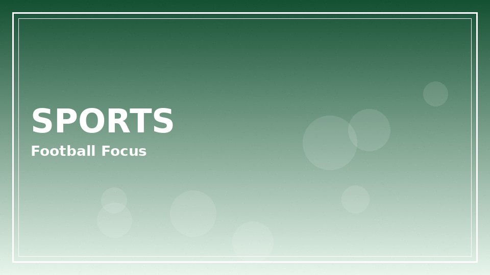
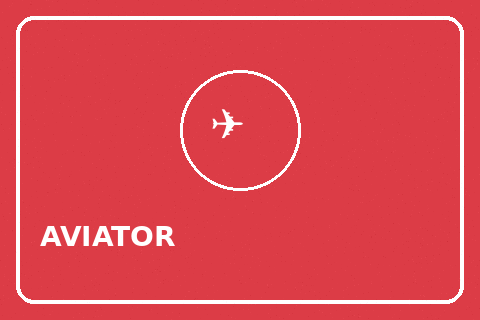
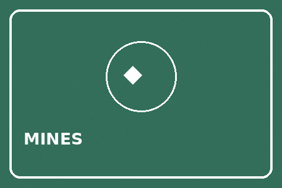
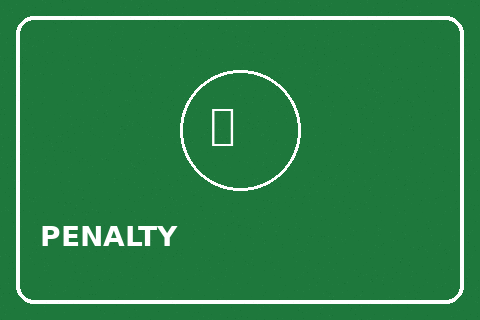
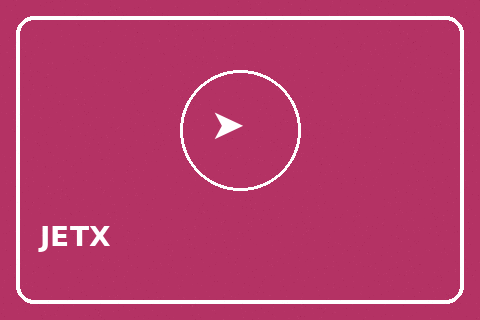
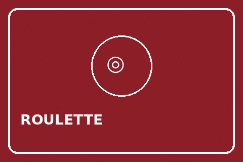
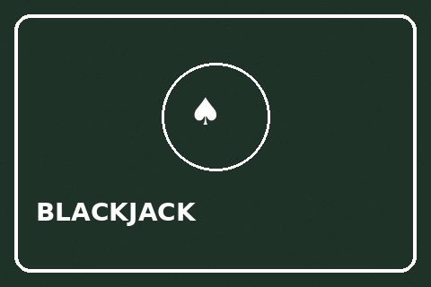
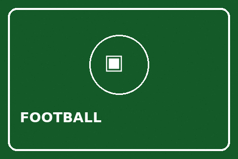
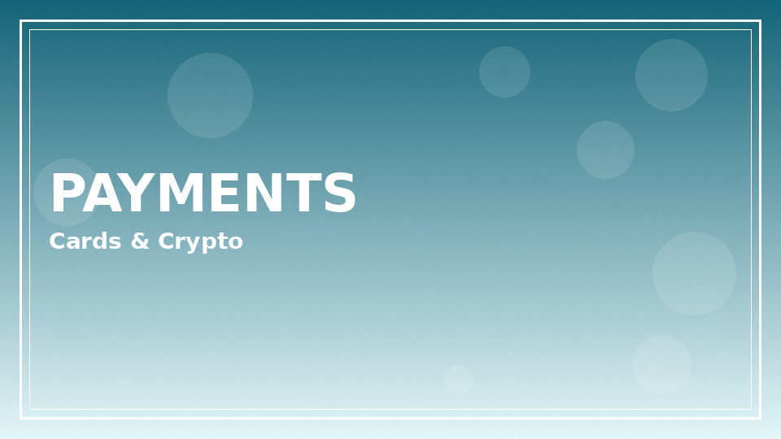
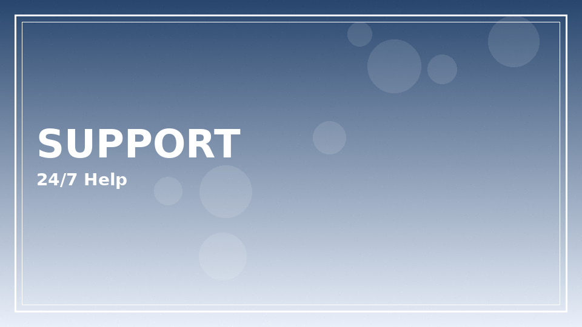

1win at a glance for Argentina readers
1win is an international online betting and casino brand that many readers in Argentina search when they want one account for sports markets, live casino tables, and instant-win titles. This hub explains how the product areas fit together, what to check before depositing, and where to find deeper guides on the app, login flow, bonuses, and local context.
We write for adults who want clear, practical information — not hype. Offers change, licensing details should always be verified on the operator site, and every session should stay within a budget you can afford to lose.
Ready to explore 1win on the official operator site? Review the live offer details before you deposit.
18+ only. Bonus wagering requirements, minimum deposit amounts, offer expiry windows, and game contribution rates vary — see operator T&Cs on the signup page before claiming any promotion. Gambling involves risk; never stake more than you can afford to lose.
What you can do with a 1win account
A single registration typically unlocks sports betting, casino slots, live dealer rooms, and crash-style games such as Aviator. Argentine football fixtures, Copa Libertadores nights, and major European leagues are usually the first sports markets people browse, while casino players often start with slots or live roulette.
- Sportsbook coverage spanning football, basketball, tennis, and esports.
- Casino lobby with slots, table games, and live dealer streams.
- Instant games including Aviator and similar crash formats.
- Mobile web and native app entry points covered on our 1win app page.

Quick comparison of 1win product areas
| Area | Best for | Typical session length | Key caution |
|---|---|---|---|
| Sports betting | Match markets & live odds | Event-driven | Line shopping and stake sizing |
| Slots & casino | Theme variety & features | Short bursts | Volatility swings |
| Live casino | Dealer interaction | Medium | Table limits and latency |
| Crash games | Fast rounds | Very short | Rapid decision pressure |
None of these products improves long-run expected return through “systems.” They differ mainly in pace, volatility, and how much attention each round demands. If you are new, demo or low-stake exploration is wiser than jumping straight into high-volatility crash rounds.
Popular games grid on 1win
The tiles below highlight twelve formats Argentine players often look up first. Each card links to the official operator site with sponsored attribution. Descriptions are editorial summaries, not promises of results.

Aviator
Crash-style multiplier flight with a manual cash-out decision each round.
Lucky Jet
Fast jet-ride rounds where timing your exit shapes the session pace.

Mines
Grid reveals with adjustable mine counts for higher or lower volatility.

Plinko
Peg-board drops that settle into multiplier slots along the bottom.

Balloon
Pump-and-release style tension as the balloon climbs before it bursts.

Penalty Shoot Out
Quick football-themed kicks that resolve in seconds.

JetX
Another crash-style ride with rising multipliers and optional auto cash-out.

Poker
Table and video poker formats for players who prefer card decisions.

Live Roulette
Live-dealer wheel streams with standard European-style layouts.

Blackjack
Classic hit-or-stand decisions against the house or live dealers.
Slots
A broad catalogue of video slots spanning themes and feature styles.

Football betting
Match markets covering Argentine leagues and international fixtures.
Payments, currency, and withdrawals
Payment options available to Argentine users can include cards, e-wallets, and other local or international rails depending on the current operator configuration. Always confirm minimum deposit, processing times, and any identity checks before you move funds.

| Check | Why it matters | Where to verify |
|---|---|---|
| Minimum deposit | Avoid failed top-ups | Cashier on operator site |
| Withdrawal method match | Some rails require same-method payouts | Cashier FAQ |
| KYC readiness | Documents speed first cash-outs | Account verification page |
| Currency display | See fees and FX clearly | Wallet / balance screen |
- Open the cashier only after you have set a session budget.
- Take a screenshot of any pending withdrawal reference numbers.
- Complete verification early rather than waiting until the first cash-out.
- Read fee and FX notes if you fund in a currency other than your bank default.
Support quality and account hygiene
Reliable support matters when a deposit stalls or a bonus fails to credit. Save chat transcripts, enable any available two-factor options, and never share one-time codes. Our 1win login guide covers resets and device hygiene in more detail.

- Use a unique password and a password manager.
- Confirm the domain is the official 1win site before entering credentials.
- Store support ticket IDs for deposits and withdrawals.
- Review our legal overview for Argentina before staking.
Bonuses without the marketing spin
Welcome packages, deposit matches, and cashback can look attractive, yet wagering rules decide whether bonus funds ever become withdrawable cash. Contribution rates often weight slots differently from sports or table games. See our bonus code 1win page for a structured reading list of common clauses.
| Element | What to look for | Typical pitfall |
|---|---|---|
| Wagering | Multiplier on bonus or bonus+deposit | Underestimating turnover |
| Min deposit | Threshold to unlock the offer | Depositing below the threshold |
| Expiry | Days to complete playthrough | Leaving funds idle too long |
| Game weighting | Which products count toward wagering | Assuming sports count 100% |
Offer terms change. Treat every headline percentage as incomplete until you open the live T&Cs. Our pages never claim outcomes or portray gambling as a substitute for income.
Reading odds and markets without rushing
Argentine evenings often revolve around football calendars, which means many 1win sessions begin with a glance at kickoff times rather than a calm bankroll plan. Slow that impulse down. Write the stake you can lose before you open the bet slip, then treat anything above that number as off-limits even if a late equaliser feels emotionally expensive. Markets move; your rent payment should not.
When you compare prices across books, remember that a slightly shorter decimal odd is not automatically a bad deal if the competing site adds payment friction or unclear settlement rules. Clarity and cash-out reliability matter as much as the second decimal place. Keep screenshots of accepted bets when you wager on volatile live markets, especially during VAR stoppages that can suspend lines without warning.
Casino hops between halves are common. If you switch from a match market into slots or Aviator, reset your mental budget instead of dragging the sports stake logic into a faster game. Different products punish distraction in different ways. A misplaced live soccer stake might sit for minutes; a crash round can resolve before you notice your coffee cooled.
Language settings and odds formats are easy to overlook. Confirm whether you are viewing decimal odds, and whether cash-out offers include margin that makes them optional conveniences rather than value. None of this is glamorous advice, yet it is the difference between a controlled pastime and a confusing night of notifications.
Finally, treat customer support transcripts as part of your personal archive. If a settlement looks wrong, calm documentation beats angry chat spam. Pair that habit with the responsible gambling block on this page so help resources stay visible even when a fixture goes against your slip.
Building a weekly routine around entertainment spend
A practical 1win routine for adults in Argentina can look like a simple weekly envelope: one number for sports, one optional number for casino, and a hard stop when either envelope is empty. Digital wallets make topping up too easy, so the envelope metaphor still helps even if the money is electronic. Move the entertainment amount once, then refuse midweek top-ups unless you have a sober written reason that is not chasing.
Match selection quality beats volume. Three well-understood fixtures with researched team news are healthier than twenty impulse corners markets. The same idea applies inside the casino lobby: two familiar slots with readable paytables beat a frantic tour of every new release banner. Novelty marketing is designed to keep you browsing; your job is to decide when browsing becomes spending.
Community tip channels can be entertaining and also misleading. Strangers do not have your bankroll, risk tolerance, or provincial legal context. If a tipster demands fees for ‘lock’ selections, walk away. Our editorial stance is deliberately dull on purpose: verify, limit, and leave when the fun stops.
Use internal guides when you need depth rather than scrolling social screenshots. The casino, app, login, bonus, Aviator, and legality articles exist so each topic can breathe. Returning to this home page should feel like a map, not a pressure to deposit.
Extended notes for index readers
Additional context for the index guide: adults reading from Argentina benefit from slow decision-making, written budgets, and a refusal to treat marketing banners as advice. Take ten quiet minutes before any deposit to list why you are opening the cashier at all.
Keep a simple ledger for a fortnight. Write dates, amounts, and product types. Patterns appear quickly — late-night crash games, salary-day spikes, or live football overreactions. Once visible, patterns are easier to change with deposit caps and app timers.
If a session stops being fun, end it without negotiating with yourself. Entertainment that requires a pep talk to continue is no longer entertainment. Use the responsible gambling block links when unease turns into distress.
Cross-read related hub pages instead of searching random screenshots. Internal articles on casino, app, login, bonuses, Aviator, Argentina context, and legality exist to answer different questions without repeating the same paragraph everywhere.
Finally, remember affiliate disclosures: sponsored links may earn this site a commission. That commercial fact does not change maths, law, or your household budget. Your constraints stay yours.
Revisit these reminders monthly. Habits drift. A calendar note labelled ‘budget review’ is a small tool with outsized value for anyone who wants play to remain optional and calm.
How this Argentina hub is organised
Use the internal links below to jump into focused topics. Each page expands one angle — casino catalogue, mobile install, Aviator rules of thumb, or local legality notes — so you do not have to re-read the same overview.
- 1win casino overview
- 1win app download guide
- 1win login help
- Bonus code 1win notes
- 1win Aviator guide
- 1win Argentina local tips
- Is 1win legal in Argentina?
- Responsible gambling
- About us
- Start with product fit (sports vs casino vs crash).
- Confirm local legality notes and your own risk tolerance.
- Read bonus terms before any promotional claim.
- Install or bookmark the official app/web entry carefully.
- Keep responsible gambling tools one tap away.
For editorial standards and how we handle affiliate relationships, visit About us. Privacy practices are summarised in our privacy and cookie policy, and site use rules sit in the terms of service.
18+. This site publishes informational content for adults only. Gambling can be addictive — set limits, take breaks, and seek help if play stops being fun.
- Support and education: BeGambleAware
- Advice and treatment pathways: GamCare
If you feel play is becoming stressful, pause and contact free support resources. Nothing on this page is financial advice.